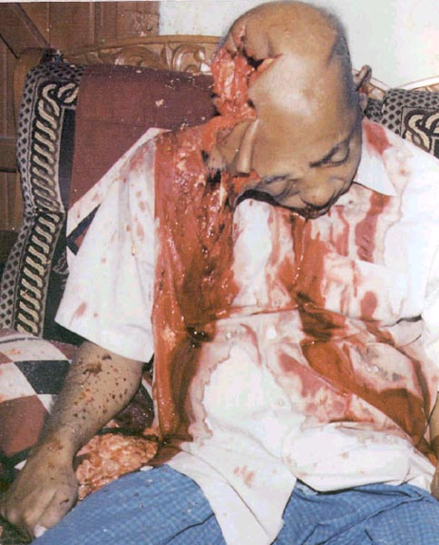

E-mail: abdul_momen@hotmail.com
Dear Friends:
The names of many victims have been published in a book along with dozens of photographs but the Bangladesh government banned its distribution outside. No one can carry these reports abroad. A few persons that tried to take them out of the country have been arrested at the airport and are now being charged with sedition. I am attaching only four photographs herewith for your quick glance.
Every day, on average 10/12 people are being murdered in Bangladesh--- it exceeded that of occupied Palestine where daily death rate (both groups) is 3 for the last 18 months. But unfortunately, as the international news media is not covering the 'crime against humanity' in Bangladesh, the newly elected pro-fundamentalist government of Begum Khaleda Zia let loose a reign of terror, looting and murders. There is still no end in sight!!!

Price for a respectable College President for being outspoken and be a minority. He was murdered reportedly by the members of the newly elected ruling party activists.
Within the last three weeks, a number of young girls have been gang raped that includes Fahima (10), Mahima (15), Selina (14), Sabrina (15), and Bilkis (28). Except Bilkis, a housewife, the rest of them committed suicide to save their families from dishonor. Most pathetic is that, after the gang rape of Mahima by three of the ruling party activists namely Sumon, Nasir and Halim [Halim is a teacher of a Madrassa], they circulated the photographs of the 'rape' and the rape victim within the locality giving the names and address to defame the honor of her parents and family as they belong to the secularist 'opposition' party, the Awami League. She committed suicide. What a mentality!!!
It is ill luck for Khaleda Zia that in 1991 on her victory many Bangladeshi girls namely Nurjahan (18) of Maulvibazar, Firoza (14) of Sathkira, Nurjahan2 (15) of Faridpur, Aleya (16) of Dinajpur and another 70 were murdered in the pretext of Shariah Law by corrupt and ill educated 'kat' Mullas of Bangladesh. Such murders stopped when protests were sent from all over the globe.
The Wrath of Election Victory: They paid for being AL supporters…lost legs forever.
Political revenge and atrocity is crippling the Bangladesh economy. The government has arrested a few intellectuals and scholars for writing against atrocities. Nearly 112 journalists have been beaten up/ arrested for exposing the issue and the ruling party hoodlums destroyed 12 press offices and last year, a total of 12 journalists were murdered for reporting crime. As her Minister for Information and Media Control, Dr. Abdul Moyeen Khan did not ban publishing 'undesirable newspapers' as perceived by the government, he has been replaced with a hard liner. Earlier, the Zia government cut off electricity, sewerage and telephone lines of a newspaper [The Jonokanto] and stop giving government advertisements as it continued publishing gruesome pictures and stories of atrocities, rape, looting, murders, takeovers and terrorism. However, in spite of threat and intimidation, the major newspapers of Bangladesh are still publishing stories of terrorism everyday.
The Aftermath of the Fundamentalist Victory in Bangladesh: An AL party worker killed while sleeping with wife and son….
This is for your information and please raise your voice to end atrocities and political revenge in Bangladesh. Please write to Bangladesh PM, other relevant personalities and law makers.
People voted the new government into power for two of its promises: first, 'to eliminate terrorism and establish rule of law', and second, to 'end corruption'. Unfortunately, both are increasing fast ...beyond tolerable limits and it appears, the new government has completely forgotten its promise. Instead, it is politicalizing even the 'law and order' issue.
Many of the 250,000 Rape Victims of 1971 War were rehabilitated in Bangladesh...many committed suicide…….Will she be rehabilitated?
Please write to the Bangladesh government and to other relevant agencies/personalities to put pressure on the government to stop such atrocities and to punish the culprits. You may like to see the attached pictures... and demand that the culprits to be punished!!!.
Thanks
Professor Abdul Momen, Ph.D.
E-mail: abdul_momen@hotmail.com
=======================================================
Source : http://groups.yahoo.com/group/mukto-mona/message/5158